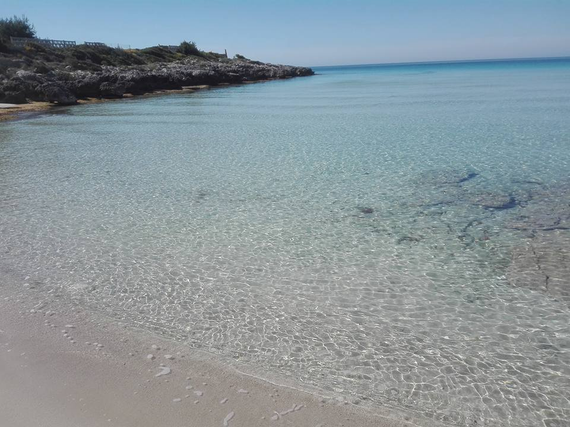
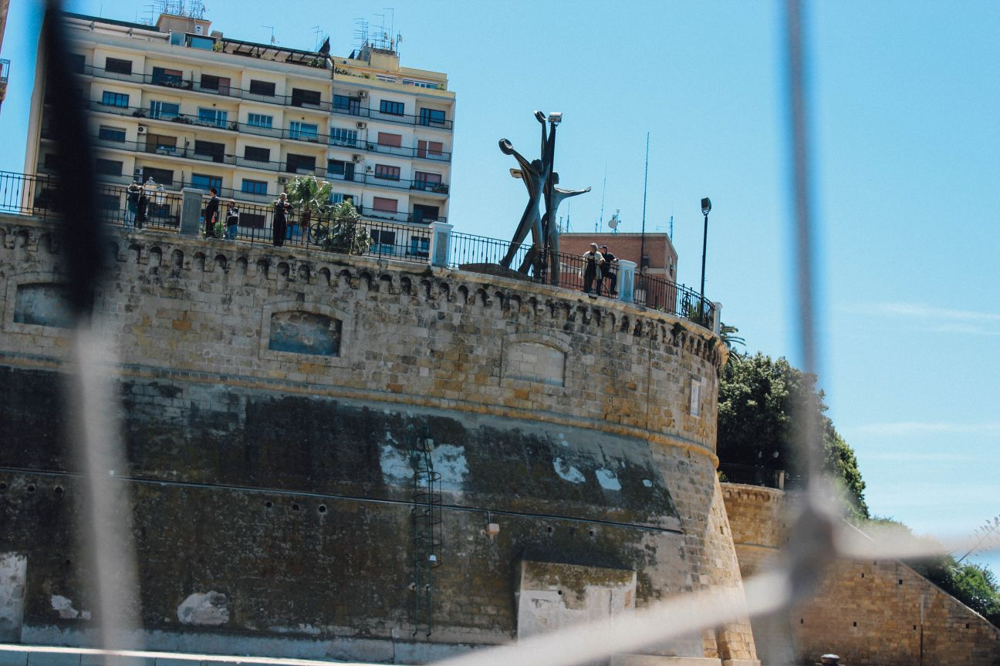

Qué visitar
Marina di Pulsano
-

- 
-

-

-

El área de Pulsano Marina se caracteriza por una sucesión de acantilados y calas de arena, los principales son Luogovivo, The Fountain, las cañas, Montedarena, Hospital Capparone (o Villa Verde), Pezzarossa, Serrone, Lido Silvana ( en cuyo golfo está presente un islote rocoso, también se puede llegar a nado, y en cuya playa todavía están presentes, aunque en menor número que en el pasado, de especímenes de enebro que plantean sus raíces entre la arena), Terrarossa y Lido Checca (que se encuentra parcialmente en el exclave antes mencionado del Municipio de Taranto). El área de Marina di Pulsano y el interior son especialmente conocidos entre los turistas que visitan Salento en virtud de la riqueza naturalista, histórica y enogastronómica que se puede experimentar en estas partes. Sus profundidades son bajas e indicadas para un turismo familiar, es el lugar ideal para practicar snorkel y actividades subacuáticas. Las playas están equipadas desde un punto de vista turístico y de baño.
Taranto
-
 Castello Aragonese
Castello Aragonese -
 Ponte Girevole
Ponte Girevole -
 Ponte di Pietra
Ponte di Pietra -

Monumento al marinaio
-
 Palazzo Prefettura
Palazzo Prefettura
Se llama "la ciudad de los dos mares", Taranto, bañado por el Mar Grande y el Mar Piccolo, con una posición estratégica que lo ha convertido en el protagonista de importantes eventos históricos. Los antiguos testimonios más valiosos se guardan en el Museo Arqueológico Nacional, MarTa, donde se puede admirar la famosa "Oro de Taranto", bellas artes producciones locales de orfebrería entre el cuarto y el segundo siglo antes de Cristo, así como la inmensa colección de hallazgos arqueológicos de toda la provincia jónica. La historia de Taranto corre a lo largo de los dos puentes que conectan la ciudad vieja con la moderna. Además del puente de piedra construido después de la inundación de 1883, el puente giratorio inaugurado en 1887 sigue teniendo el encanto de las grandes obras de ingeniería mecánica y conduce al laberinto de callejones alrededor de la Via Cava central, donde florecen varias tiendas artesanales. En este istmo de la tierra se levantan arquitecturas nobles e iglesias de diferentes épocas y estilos como la Catedral de San Cataldo en la vuelta del románico y el barroco, o la de San Domenico con características góticas.
Valle d'Itria
-
 Alberobello
Alberobello -
 Martina Franca
Martina Franca -
 Ceglie Messapica
Ceglie Messapica -
 Cisternino
Cisternino -
 Ostuni
Ostuni
Trulli rodeado de viñedos y olivares hasta donde alcanza la vista, esta es la cara más auténtica del Valle de Itria. El paisaje llena la mirada de una magia intemporal, en el corazón de pueblos encantadores como Alberobello, Martina Franca, Ceglie Messapica y Cisternino. Ostuni parece un espejismo, hermoso en la colina en la meseta cubierta de olivos, donde el verde se sumerge en el azul del mar de Ardrial. Solo un paseo por los callejones para admirar los hermosos patios y plazas enmarcados por casas blancas, tiendas de artesanía y restaurantes donde se cocinan deliciosos asados de carne y sabrosas verduras de temporada. Aquí se vive sereno, inmerso en los aromas y sabores del pasado